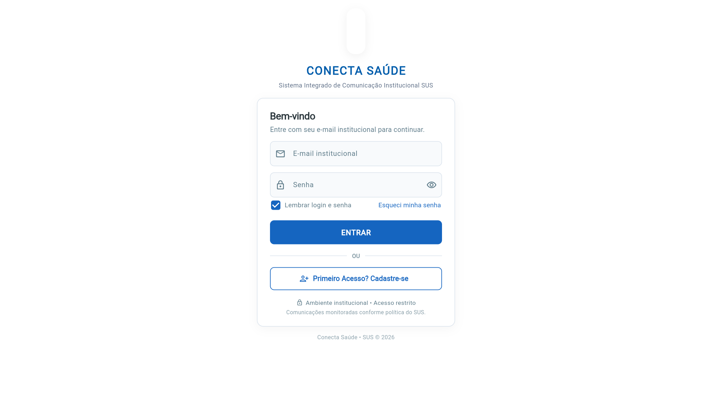
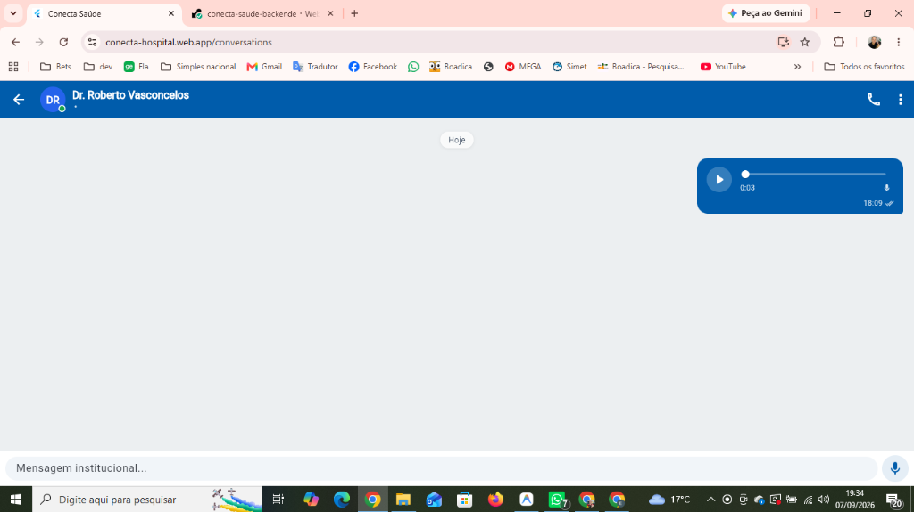
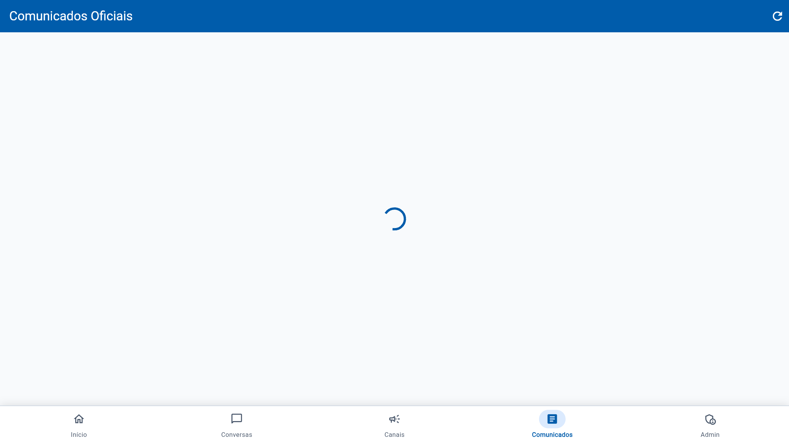

Dossiê Executivo de Apresentação Técnica e Operacional
Por que o uso do WhatsApp pessoal é uma grave ameaça assistencial e jurídica
| Ponto Crítico | WhatsApp Informal Pessoal | Conecta Saúde Institucional |
|---|---|---|
| Proteção de Dados (LGPD) | ❌ Fotos e dados de prontuário salvos no celular pessoal | ✅ Ambiente fechado na nuvem, sem cópia em aparelho pessoal |
| Passivo Trabalhista | ❌ Contato no número pessoal fora do plantão gera sobreaviso | ✅ Desconexão corporativa e controle estrito por escala |
| Emergência / Código Azul | ❌ Chamados soterrados por conversas paralelas e memes | ✅ Alarme prioritário sobreposto em 2 cliques com leito e setor |
| Governança & Rastreabilidade | ❌ Mensagens apagadas ('apagar para todos') sem log | ✅ Trilha de auditoria imutável com carimbo de data, hora e autor |
Em caso de incidente ou auditoria do Ministério da Saúde e do Ministério Público, a diretoria não tem como auditar nem controlar grupos pessoais de WhatsApp.
Trocas de plantão desestruturadas provocam omissão de dados clínicos e atraso na liberação de leitos e realização de exames complementares.
Comunicação privativa, credenciais funcionais e monitoramento de ponta a ponta
Login seguro com e-mail corporativo aprovado pelo RH/Coordenação. Preserva o sigilo do número pessoal do profissional.
Zero distrações: sem grupos de família, propagandas ou conversas aleatórias durante o plantão no hospital.
Compatível com computadores antigos dos postos de enfermagem via PWA no navegador e celulares Android via APK leve.
Colaboradores transferidos ou desligados perdem o acesso instantaneamente na nuvem, sem deixar histórico nos aparelhos.

Como a fluidez da comunicação interna acelera o atendimento e salva vidas
Comunicação instantânea entre a recepção do CCO/CCE e a equipe de enfermagem, reduzindo filas na sala de espera.
Chamado do paciente para exames ou leito feito em canal setorial direto, sem gritaria nos corredores ou perda de tempo.
Laudos e imagens gerados no CCDTI comunicados rapidamente ao especialista do CCO/CCE para conduta imediata.
Se o paciente sofrer uma PCR ou choque anafilático, o alarme é disparado em 2 cliques com o setor e leito exatos.
Nenhum dado, foto de lesão ou prontuário fica armazenado no celular de terceiros, garantindo dignidade e privacidade.
Menos sobrecarga cognitiva, ferramentas ágeis e preservação do tempo livre
O médico grava orientações clínicas rapidamente e o colega ouve na velocidade 1.5x ou 2x, com navegação por toque na barra de som.
Informações pontuais de passagem de plantão desaparecem automaticamente após 24h, mantendo o ambiente limpo e seguro.
Fim das notificações profissionais invadindo o descanso em família. O trabalho fica no ambiente institucional.
Qualquer profissional aciona reforço ou código de emergência com 2 toques na tela em situações críticas.

Visibilidade executiva em tempo real para tomada de decisão e auditoria
Veja nominalmente quais médicos e enfermeiros visualizaram portarias e avisos críticos com data e hora registradas no servidor.
Registro automático de tempo de resposta em incidentes (PCR, falta de oxigênio, pane elétrica) para avaliação contínua da qualidade.
Gestão centralizada de equipes: visualize quantos colaboradores estão ativos por setor e aprove novos acessos com 1 clique.
Relatórios prontos para respaldo perante o Ministério Público, Tribunal de Contas (TCM/TCE) e auditorias da SMS.

Módulos operacionais testados e prontos para implantação imediata
Conversas diretas e grupos com badge `GRUPO`, fotos personalizadas, adição ágil de membros e limpeza de histórico.
Gravação de áudio instantânea com barras sonoras dinâmicas e acelerador 1.5x/2x para otimizar o tempo do médico.
Mensagens temporárias de plantão com expiração automática, blindando informações transitórias de pacientes.
Salas institucionais de comunicação setorial (CCO, CCE, CCDTI, Farmácia, Triagem), com publicação restrita à chefia.
Disparo em 2 cliques de Código Azul (PCR) e panes com setor/leito, cronômetro de resposta e encerramento médico.
Canal de denúncias e relatos blindado contra retaliação de chefia, com apuração direta pela Direção Geral.
Construído especificamente para a realidade operacional dos hospitais públicos
| Característica | Teams / Slack | Conecta Saúde SUS |
|---|---|---|
| Hierarquia SUS 4 Níveis | ❌ Inexistente (permissões genéricas de TI) | ✅ Nativa (Direção, Coordenação, Supervisão, Operacional) |
| Código Azul / Emergência | ❌ Não possui alerta prioritário clínico | ✅ Botão dedicado de PCR com leito e cronômetro |
| Carga em Máquinas Antigas | ❌ Pesados, exigem computadores potentes | ✅ Ultraleve (PWA Web + App Android nativo) |
| Número de Celular Privado | ❌ Exige configuração complexa ou vínculo | ✅ Zero exposição de número particular |
| Custo de Licenciamento | ❌ Cobrança em dólar de alto impacto | ✅ Custo em reais acessível ao orçamento da unidade |
Blindagem jurídica e técnica para dados sensíveis de saúde (Art. 11 da Lei 13.709/2018)
Nenhuma comunicação trafega sem criptografia forte, impedindo interceptação de dados mesmo em redes Wi-Fi públicas ou hospitalares.
Documentos e fotos são visualizados em sandbox segura na nuvem, sem download automático para a galeria de fotos particular dos profissionais.
PostgreSQL de alta disponibilidade com Row Level Security (RLS) ativo e controle restrito de privilégios de acesso por hospital.
Histórico completo de acessos, envios e confirmações de leitura gravados para respaldo perante a ANPD e auditorias sanitárias.
Alta disponibilidade, escalabilidade instantânea e custo zero de infraestrutura local
Sem necessidade de adquirir servidores físicos, racks ou sistemas de climatização dedicados para o hospital.
Novas funcionalidades, patches de segurança e otimizações entram em produção automaticamente sem interromper os plantões.
Pronto para atender desde os 3 centros atuais (CCO, CCE, CCDTI) até futuras unidades integradas da rede de saúde.
Cópias de segurança diárias com tolerância a falhas e recuperação instantânea em caso de desastre (Disaster Recovery).
Backend Node.js API + PostgreSQL + Firebase Hosting CDN
Roteiro ágil de ativação estruturado em 4 fases sequenciais sem atrito
Criação dos setores institucionais (CCO, CCE, CCDTI, Farmácia, Maqueiros, Postos de Enfermagem e Salas de Triagem).
Carga rápida da lista de profissionais por especialidade e aprovação em 1 clique pelo RH e Coordenador Médico.
Capacitação executiva das coordenações de setor em sessões práticas de 20 minutos, focadas em canais e emergência.
Ativação oficial com suporte presencial e remoto nos primeiros plantões para garantir 100% de adesão das equipes.
Conformidade estrita com a Nova Lei de Licitações e Regulamentos de OSS
Contratação direta pela Organização Social gestora (ex: SPDM, Viva Rio) como fornecimento de tecnologia operacional previsto no Contrato de Gestão com a Secretaria Municipal de Saúde.
Contratação com base no Art. 75, inciso II da Nova Lei de Licitações (Lei Federal 14.133/2021) para contratação de serviços e soluções de tecnologia abaixo do limite legal anual.
Acordo de cooperação técnica e inovação em saúde digital para validação e homologação do piloto de 30 dias sem desembolso financeiro prévio pela instituição.
Validação prática nos setores mais movimentados antes da expansão definitiva
Implantação focada no Centro Carioca do Olho (CCO) e no setor de Triagem / Emergência do complexo.
Tempo ideal para cobrir todas as escalas de plantonistas (diurnos e noturnos) e passagens de plantão semanais.
Nossa equipe técnica entrega relatórios periódicos de adesão, tempo de resposta em emergências e volume de comunicados lidos.
Se ao final dos 30 dias a diretoria entender que o sistema não gerou valor, o piloto é encerrado sem qualquer multa ou penalidade.
Ativação imediata em 48 horas após alinhamento
Metas auditáveis para prestação de contas à Secretaria Municipal de Saúde
Todos os indicadores são compilados automaticamente na nuvem, permitindo que o Diretor do Super Centro apresente gráficos e relatórios consolidados em reuniões de prestação de contas com o Secretário de Saúde.
Custo previsível, transparente e dimensionado para a realidade do SUS
Ideal para contratações escaláveis por setor. A unidade paga apenas pelos colaboradores cadastrados e ativos no mês.
Valor institucional fixo cobrindo integralmente CCO, CCE e CCDTI, com colaboradores e mensagens ilimitadas.
Garantia contratual de titularidade exclusiva das informações de saúde
Todas as mensagens, comunicados, chamados de emergência e logs são patrimônio institucional do Super Centro Carioca e da SMS-Rio.
Cessão de direito de uso contínuo (SaaS) garantida em contrato formal, com código e infraestrutura mantidos e atualizados pela fornecedora.
A diretoria pode requisitar ou exportar a qualquer momento relatórios completos em formatos abertos para fins de auditoria sanitária ou jurídica.
Termo de Confidencialidade e Não-Divulgação assinado entre as partes, resguardando todo e qualquer dado clínico ou operacional.
Garantia de estabilidade para um ambiente hospitalar que opera 24 horas por dia
| Severidade | Descrição do Cenário | Tempo Máximo de Resposta |
|---|---|---|
| Nível Crítico (P1) | Indisponibilidade da plataforma ou falha no Código Azul | Até 15 minutos (24/7) |
| Nível Alto (P2) | Lentidão ou falha parcial em envio de comunicados | Até 2 horas úteis |
| Nível Médio (P3) | Dúvidas operacionais, cadastro de novos setores e RH | Até 4 horas úteis |
Linha de evolução tecnológica contínua para o ecossistema SUS